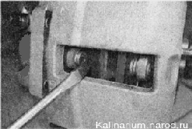
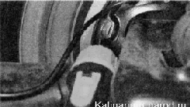
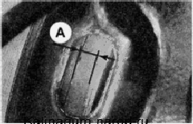

7. Плотно закрываем крышку бачка.
8. Подсоединяем колодку жгута проводов к разъему датчика.
9. Проверяем работу датчика аварийного уровня тормозной жидкости: при включенном зажигании нажимаем сверху на резиновую накладку крышки бачка. Если датчик исправен, на щитке приборов загорится контрольная лампа.
ВАКУУМНЫЙ УСИЛИТЕЛЬ ТОРМОЗОВ. ПРОВЕРКА
Последовательность выполнения
1. Подготавливаем автомобиль к выполнению работ.
2. При неработающем двигателе несколько раз нажимаем педаль тормоза до тех пор, пока не прекратится шипение в усилителе тормозов.
3. Нажимаем педаль тормоза и удерживаем ее в нажатом положении.
4. Не отпуская педаль, запускаем двигатель.
5. Если сразу после пуска двигателя педаль немного переместилась вниз, усилитель тормозов исправен.
В противном случае проверяем целостность шланга подвода разрежения к вакуумному усилителю, герметичность его подсоединения к впускному ресиверу и патрубку обратного клапана усилителя. Если шланг исправен и соединен герметично, неисправен вакуумный усилитель.
СТОЯНОЧНЫЙ ТОРМОЗ - ПРОВЕРКА ХОДА РЫЧАГА
В процессе эксплуатации автомобиля, вследствие износа накладок задних тормозных колодок и вытягивания тросов привода, периодически возникает необходимость в регулировке хода рычага стояночного тормоза.
Ход рычага стояночного тормоза должен составлять 2—4 щелчка. При этом тормозная система должна надежно удерживать снаряженный автомобиль на уклоне в 23 %. Если это не так, проверяем состояние стояночной тормозной системы и при необходимости регулируем ее (см. «Стояночный тормоз регулировка») и заменяем изношенные или поврежденные детали, после чего повторяем проверку.
ПЕДАЛЬ ТОРМОЗА - ПРОВЕРКА СВОБОДНОГО ХОДА
Свободный ход педали тормоза — это ход педали от ее верхнего положения до начала срабатывания тормозных механизмов. Он должен составлять 3—5 мм.
Для выполнения работы потребуется линейка или рулетка.
Последовательность выполнения
1. Подготавливаем автомобиль к выполнению работы.
2. Устанавливаем около педали линейку или рулетку и измеряем расстояние от пола до наружной поверхности педали тормоза. Нажимая педаль рукой, опускаем ее до тех пор, пока не почувствуем увеличение сопротивления движению педали. Повторяем измерения. По разности полученных значений определяем свободный ход.
Если ход педали больше или меньше требуемого значения - регулируем ход педали.
ТОРМОЗНЫЕ КОЛОДКИ - ПРОВЕРКА ИЗНОСА
Последовательность выполнения
Проверку степени износа тормозных колодок передних тормозных механизмов выполняем в следующей последовательности.
1. Устанавливаем автомобиль на смотровую канаву.
2. Снимаем передние колеса.
3. При проверке колодок левого тормозного механизма полностью поворачиваем рулевое колесо влево, а при проверке колодок правого тормозного механизма — вправо.
4. Через смотровое отверстие в подвижной скобе суппорта визуально определяем толщину накладок тормозных колодок.

Если толщина накладки хотя бы одной колодки менее 1,5 мм, меняем все тормозные колодки тормозных механизмов правого и левого колес.
5. Заодно проверяем подвижность поршней тормозных цилиндров. При «закисании» поршня заменяем цилиндр.
Для выполнения проверки степени износа тормозных колодок задних тормозных механизмов потребуется фонарик.
1. Подготавливаем автомобиль к выполнению работы.
2. Шлицевой отверткой извлекаем резиновую заглушку смотрового отверстия в опорном щите тормозного механизма заднего колеса.
3. Освещаем смотровое отверстие фонарем.

Если толщина накладки тормозной колодки А менее 1,5 мм, меняем все тормозные колодки тормозных механизмов правого и левого колес.

4. Устанавливаем заглушку на место.
|